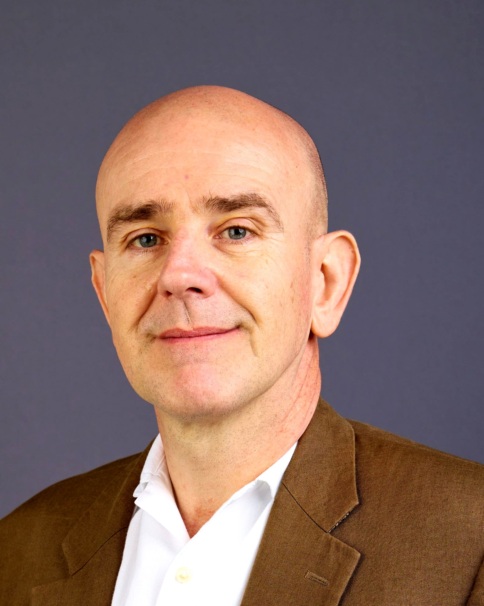

Stuart J. Green works with institutional leaders navigating irreversible change, applying three decades of marine systems science to organisations where the previous model is structurally obsolete. He helps CEOs and boards diagnose why their operating model no longer works in current conditions, and what needs to change, drawing on experience from major development banks navigating systemic reform to collapsed fishing communities and SMEs across Asia-Pacific.
He helps organisations redesign models built for conditions that no longer exist, identifying outdated assumptions, incentives that reward the wrong behaviour, and governance structures that slow down decision-making. His approach enables organisations to reset direction and design what comes next.
Most operating model methodologies are developed in business schools and consulting firms, then tested on clients. Stuart's was forged in the opposite direction. He spent a decade embedded in coastal communities and SMEs across Asia-Pacific where entire marine economies had become structurally unviable. He watched systems collapse in real time: fishing communities that had sustained families for generations, small enterprises that could not absorb compound shocks, governance structures that accelerated the failure they were designed to prevent.
That direct observation of structural failure at the point of collapse is what separates Stuart's diagnostic lens from theory developed in a seminar room. He then scaled those patterns into institutional design at the global level, advising the World Bank, the Asian Development Bank (contributing to a USD 6 billion Oceans and Blue Economy Plan 2030), and the United Kingdom Government's GBP 400 million Blue Planet Fund.
Across these roles, he mobilised over USD 500 million into systemic reform and designed governance systems spanning more than 100 large-scale programmes across six Asia-Pacific jurisdictions. Every framework was tested in complex, politically sensitive environments where failure carried real economic and social consequences. The methodology works because it was built where getting the diagnosis wrong meant livelihoods collapsed, not where it meant a quarterly target was missed.
The REGENERATE framework emerged from two converging lines of inquiry: the science of how ecological systems regenerate after catastrophic disturbance (marine systems science, fire ecology, regenerative cycles), and three decades of direct observation of how institutions, SMEs, and governance systems either redesign under compound pressure or fail.
The framework does not borrow metaphors from nature. It translates the structural patterns that natural systems have stress-tested over 3.8 billion years into enforceable strategy for organisations facing irreversible change. It provides leaders with a diagnostic methodology for what comes next when traditional recovery approaches have structurally failed.
The framework has three phases.
The strategic decommissioning of what no longer fits. The institutional habits, capacities, structures, and assumptions that the organisation is still defending despite the conditions having moved past them. RAZE is the deliberate clearing of capacity that has been locked into obsolete commitments. Most organisations cannot grow because they have nothing left to grow with. RAZE recovers that capacity.
Composting what was cleared into the substrate that supports what comes next. Governance, capacity, relationships, capital, and the institutional conditions that determine whether new growth is possible at all. ENRICH is the phase most organisations skip. They clear and they plant in the same season. The substrate is not ready. The new model fails because the conditions for it have not been built.
The design and resourcing of the organisation's next operating model. A new form fitted to current and emerging conditions, built on the substrate that ENRICH prepared and the capacity that RAZE recovered. GROW is designed work. It is the only phase the organisation sees as growth, but it is dependent on the two phases that came before it.
The framework was tested under the most demanding conditions before it was applied to corporate and governance contexts. This is not a theoretical model. It was forged in environments where the consequences of failure were immediate and material. Its core principles, including strategic decommissioning (what you stop doing matters more than what you start), signal extraction, and baseline shift recognition, emerged from observing what actually works when the old model has structurally failed and the organisation must design what replaces it.
The Regenerate Leap: How Leaders Transform Crisis into Enduring Growth is for CEOs navigating technological or industry upheaval, founders facing structural setbacks, and executives leading teams through compound disruption.
The book provides the REGENERATE framework: a three-phase methodology (RAZE, ENRICH, GROW) built on the science of how natural systems regenerate after catastrophic disturbance. It shows how to use the crisis itself to build a structurally stronger model, rather than attempting to restore conditions that no longer exist.
"The old advice to simply 'bounce back' is a recipe for extinction. Stuart J. Green's REGENERATE provides the essential framework to leap forward and build the future you desire and deserve."
"Stuart J. Green has captured this truth brilliantly. His framework moves beyond the tired rhetoric of resilience and provides a clear, actionable methodology for genuine institutional renewal. This book should be required reading for every consultant and consulting leader who wants to deliver lasting value, not just temporary fixes."
"Building mindful, responsible AI has taught me that the hardest problems aren't technological, they're human. I've worked with Stuart and watched him help leaders dismantle those human barriers. The Regenerate Leap is the missing piece: a rigorous, humane playbook for leading with courage through profound technological change. I wish I'd had this book a decade ago."
The methodology draws on three decades of peer-reviewed research and institutional reports in marine systems science, fisheries governance, and ecosystem-based management. Stuart is the author or co-author of more than 36 published works with over 580 citations and an h-index of 11, spanning marine protected area design, climate-informed fisheries management, coastal governance, and active management of complex ecological systems.
Selected venues include Marine Policy, Conservation and Society, Biodiversity and Conservation, Ocean and Coastal Management, and Conservation Science and Practice.
A complete publications list is available on request.
Stuart J. Green is the founder of Blue-Green Advisors (BGA), an advisory firm that diagnoses structural failure in organisations and designs the systems to replace what has stopped working. He is also UK and Europe lead at Cognisee, PBC.
BGA advises across the spectrum, from SMEs facing market disruption to multilateral institutions navigating systemic reform, applying the same diagnostic methodology at every scale.
Visit bluegreenadvisors.comStuart J. Green is available for interviews, bylined articles, expert commentary, and panel contributions on the following topics:
Why AI is exposing the structural flaws organisations have been ignoring, and why the organisations getting the most from AI redesigned how they work first.
Why boards and CEOs talk past each other on strategy during transformation, and how to diagnose whether the problem is leadership or architecture.
How to identify when an operating model has quietly stopped working, and what competent leaders miss when the architecture is the constraint.
Why the most optimised organisations are often the most fragile, and what nature knows about resilience that most CFOs do not.
Why "bouncing back" is the wrong goal when the world is not going back to what it was, and what regeneration requires instead, including the discipline of strategic decommissioning.
Why traditional crisis management fails when disruptions are simultaneous, structural, and permanent.
How to tell whether your organisation has a leadership problem or a design problem, and why the distinction determines everything.
"Resilience is a trap. Regeneration is a strategy."
"Organisations exhaust themselves restoring conditions that no longer exist."
"The baseline has shifted. There is nothing to bounce back to."
"Some systems require fire to release dormant capacity."
"The question is whether you design for disruption or let it design you."
"Nature has been stress-testing regeneration for 3.8 billion years. I translate those patterns for leaders."
For media enquiries, speaking availability, and interview scheduling:
Stuart is available for in-studio broadcast, remote interview, pre-recorded commentary, and panel contributions. For urgent media requests, contact the PR team directly.